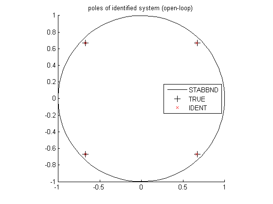
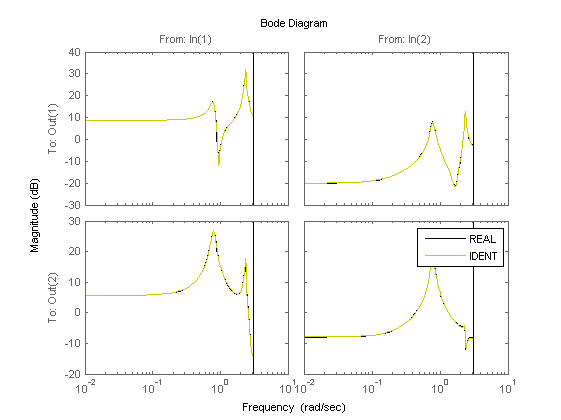

Contents
Example 15: Fourth-order Wiener model
close all; clear; clc;
The fourth-order LTI model with coloured process noise
% state-space matrices A = [0.67 0.67 0 0; -0.67 0.67 0 0; 0 0 -0.67 -0.67; 0 0 0.67 -0.67]; B = [0.6598 -0.5256; 1.9698 0.4845; 4.3171 -0.4879; -2.6436 -0.3416]; K = [-0.6968 -0.1474; 0.1722 0.5646; 0.6484 -0.4660; -0.9400 0.1032]; C = [-0.3749 0.0751 -0.5225 0.5830; -0.8977 0.7543 0.1159 0.0982]; D = zeros(2); % open-loop system OL = ss(A,[B K],C,[D eye(2)],1);
Open-loop identification experiment
Simulation of the model in open loop
% input signals N = 1000; % number of samples t = (0:N-1)'; % time samples r = randn(N,2); % excitation signal % noise e = 0.04.*randn(N,2); % noise signal % simulation of open loop y0 = lsim(OL,[r zeros(N,2)],t); y = lsim(OL,[r e],t); fy = [sign(y(:,1)).*sqrt(abs(y(:,1))) sign(y(:,2)).*sqrt(abs(y(:,2)))]; disp('Signal to noise ratio (SNR) (open-loop)') snr(y,y0)
Signal to noise ratio (SNR) (open-loop) ans = 38.4416 32.3606
Identification of the model in open loop
% parameters n = 4; % order of system f = 10; % future window size p = 10; % past window size % PBSID-varx (open loop) [us,Du,ys,Dy] = sigscale(r,fy); [S,x,yi] = wordvarx(us,ys,f,p,1e-4,1e-8); figure, semilogy(S,'*'); x = wmodx(x,n); [Ai,Bi,Ci,Di,Ki] = wx2abcdk(x,us,yi,f,p);
Verification results
% variance accounted for (open loop) Qy = (Dy\y(p+1:p+size(yi,2),:)')*pinv(yi); OLi = ss(Ai,Bi/Du,Dy*Qy*Ci,Dy*Qy*Di,1); yv = lsim(OL(1:2,1:2),r,t); ye = lsim(OLi,r,t); disp('VAF (open-loop)') vaf(yv,ye)
VAF (open-loop) ans = 99.9971 99.9347
Identification results
% plot eigenvalues (open loop) figure hold on title('poles of identified system (open-loop)') [cx,cy] = pol2cart(linspace(0,2*pi),ones(1,100)); plot(cx,cy,'k'); plot(real(pole(OL)),imag(pole(OL)),'k+','LineWidth',0.1,'MarkerEdgeColor','k','MarkerFaceColor','k','MarkerSize',10); plot(real(eig(Ai)),imag(eig(Ai)),'rx'); axis([-1 1 -1 1]); axis square legend('STABBND','TRUE','IDENT','Location','East'); hold off % simulation (open loop) figure, bodemag(OL(1:2,1:2),'k',OLi,'y'); legend('REAL','IDENT'); % plot the non-linear function yi = Dy*Qy*yi; figure, subplot(1,2,1), plot(y(:,1),fy(:,1),'k.',yi(1,:)',fy(p+1:p+size(yi,2),1),'r.'); subplot(1,2,2), plot(y(:,2),fy(:,2),'k.',yi(2,:)',fy(p+1:p+size(yi,2),2),'r.'); 